Crafting and automation: pages
Crafting and automation
Ores and metals
Neodymium, tantalum and gallium - where their ores generate, mining and smelting them, dusts with Arcforge, and the storage blocks.
On this page
The mod adds three metals. Neodymium and tantalum open up the middle of the mod: 128K and larger dies and drives, Tantalum Capacitors, Pressurized and Energy drives, ports and the Gateway. Gallium is for the top of it: Processor Dies, Optical Transceivers and Radio Modules. Each has an ore, a raw metal, an ingot and a storage block. Everything before them (Logic and Memory Dies, the first network, the Midrange line) needs only vanilla materials.
Where the ores are#
All three generate in the Overworld only, in every Overworld biome.
| Ore | Height | Veins | Vein size | Notes |
|---|---|---|---|---|
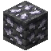 Deepslate Neodymium Ore | y -32 to 48, most around y 8 | 8 per chunk | up to 8 | The commonest. Generates whether or not it's exposed to air |
| The bottom of the world (y -64) to y -8, evenly | 4 per chunk | up to 6 | Below y -8 it's mostly in deepslate. 40% of veins touching air are skipped | |
| The bottom of the world (y -64) to y -32, most around y -48 | 2 per chunk | up to 4 | Deepslate only, the deepest and rarest. 60% of veins touching air are skipped |
"Most around" is the peak of a triangular spread: the ore is commonest there and thins out towards both ends. Because tantalum and gallium avoid air, look for them by branch mining rather than in caves.
Screenshot needed
A mine wall at about y -40 with deepslate neodymium, deepslate tantalum and deepslate gallium ore exposed side by side
docs/site-src/images/crafting/ores.png · 1600x900
Mining#
Every ore needs an iron pickaxe or better. Deepslate ores are harder to break, as vanilla's are.
Mined normally, an ore drops one raw metal ( 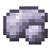 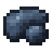 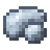c:ores tags (c:ores/neodymium and so on), so other mods' ore processing recognises them.
Ingots#
Smelt or blast the raw metal, the ore block itself or the dust into an ingot: 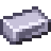 Tantalum Ingot,
Tantalum Ingot,  Gallium Ingot. The furnace and the blast furnace both work, for all three inputs.
Gallium Ingot. The furnace and the blast furnace both work, for all three inputs.
Dusts (with Arcforge)#
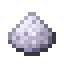 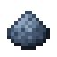 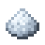
| Arc Crusher input | Gives |
|---|---|
| Ore | 2 dust, and a 25% chance of 1 more |
| Raw metal | 1 dust, and a 25% chance of 1 more |
| Ingot | 1 dust |
Each takes 200 ticks. So with Arcforge, crushing ore before smelting gives more ingots. See Arcforge.
Storage blocks#
Nine ingots make a block, and a block crafts back into nine:
| Block | From |
|---|---|
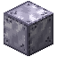 Block of Neodymium | 9 Neodymium Ingots |
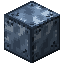 Block of Tantalum | 9 Tantalum Ingots |
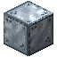 Block of Gallium | 9 Gallium Ingots |
| 9 Ferrite |
They need an iron pickaxe to mine, and are in the c:storage_blocks tags. The three metal blocks (not Ferrite) can be used in a beacon's base.